I was born at shelter. My first owner Ranny chosen me among a lot of kittens because I was so cute. After I was adopted, Ranny took me to Vet to have surgey in order to remove the tumor in my belly. I appreciated so much to my Ranny.
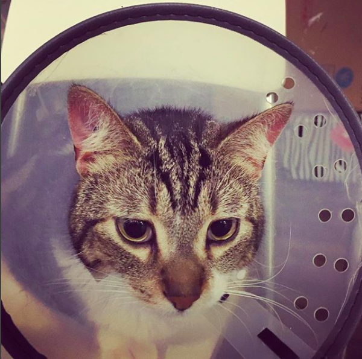Ranny loved me so much and I had super happy childhood.
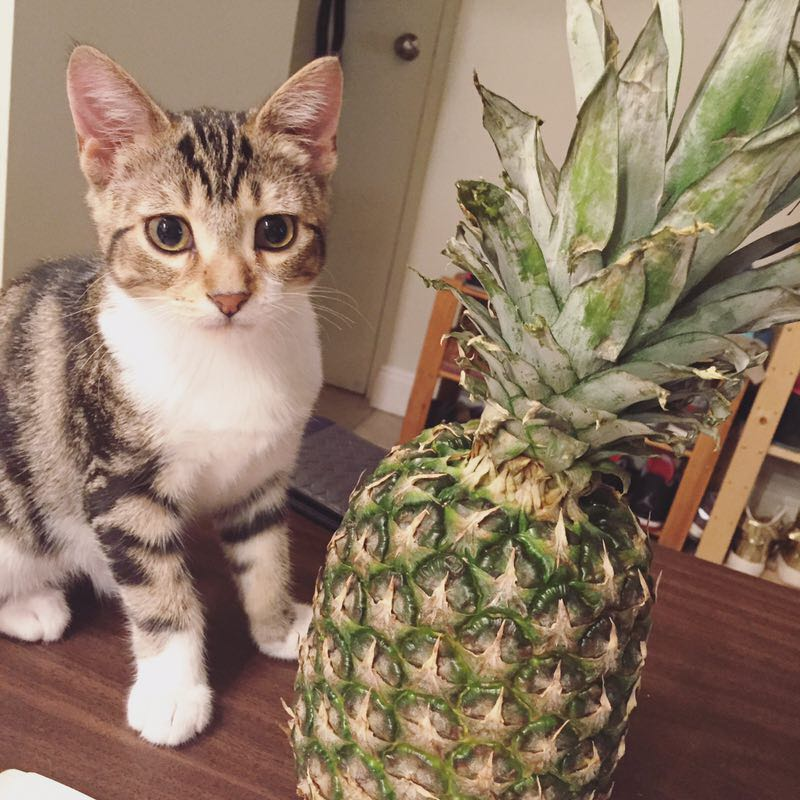 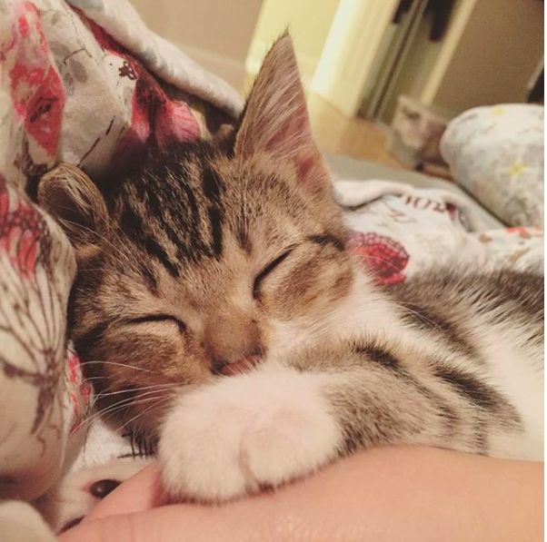When I was about 1 year old Ranny moved to Calgary because of work. I was forstered by another family when Ranny was away. I was transfered to Jessica's family on May 2017.
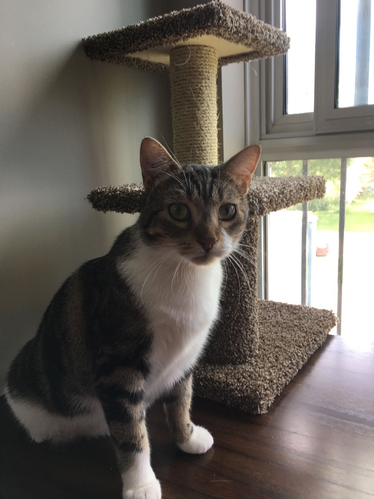 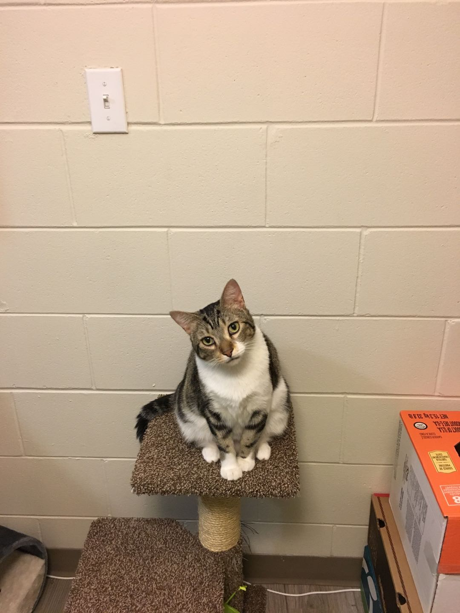I made a new friend named miaomao who was brought by Jessica from Shanghai China. Miaomiao was really unfriendly to me when we first met. He tried to drive me away from his territory.
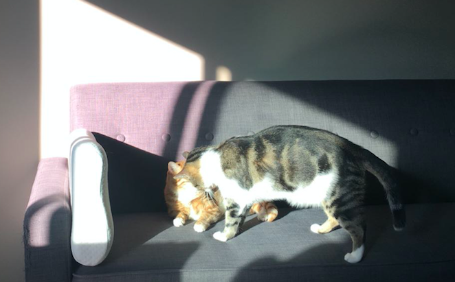 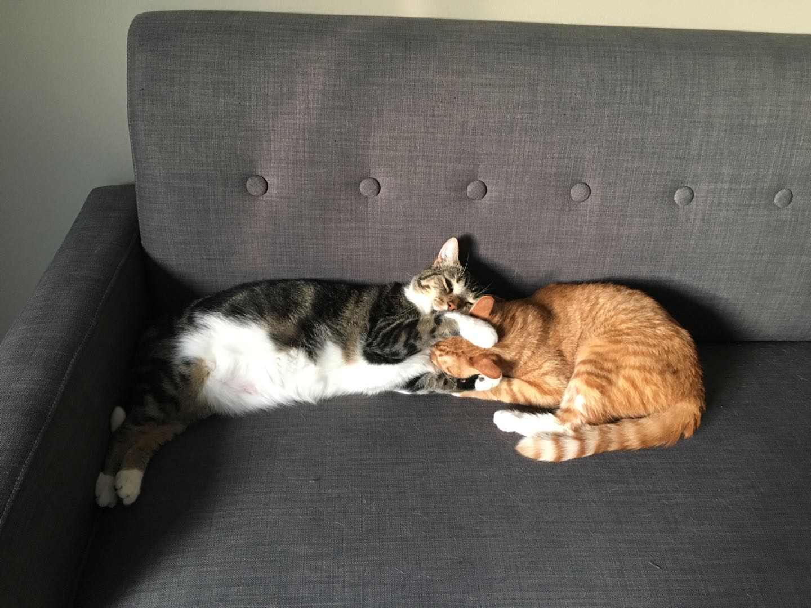We fought many times everyday for several weeks, but Finally, we become friens even though we still fight sometimes.
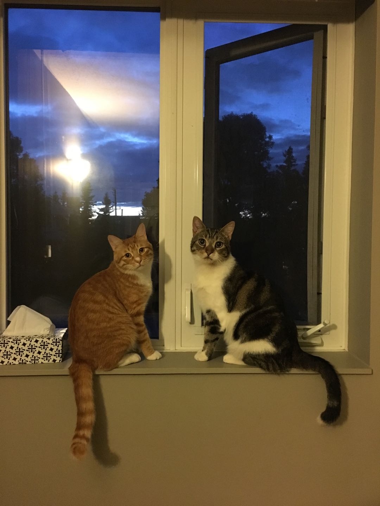 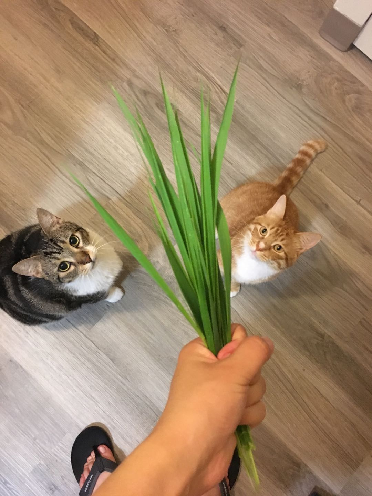I really like haveing food, especially the snack. All of a sudden, I realised I put on a lot wieight. I can never resist boxes.
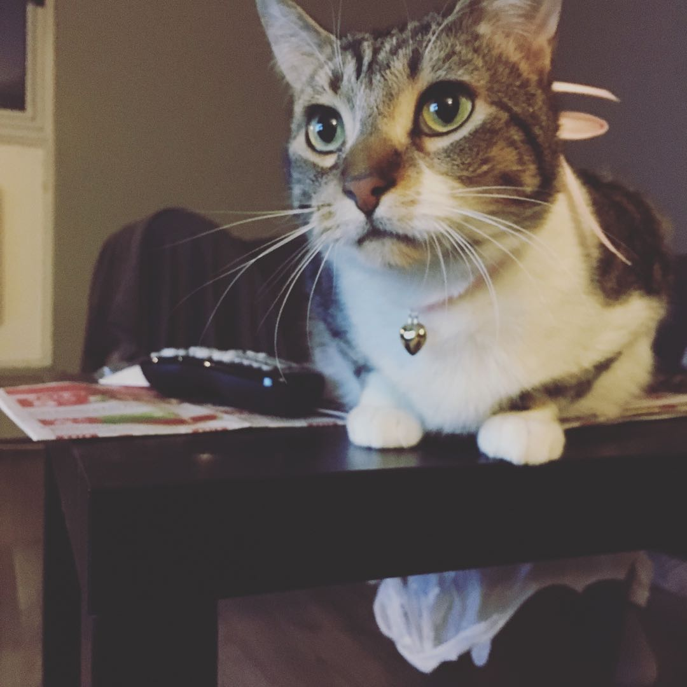 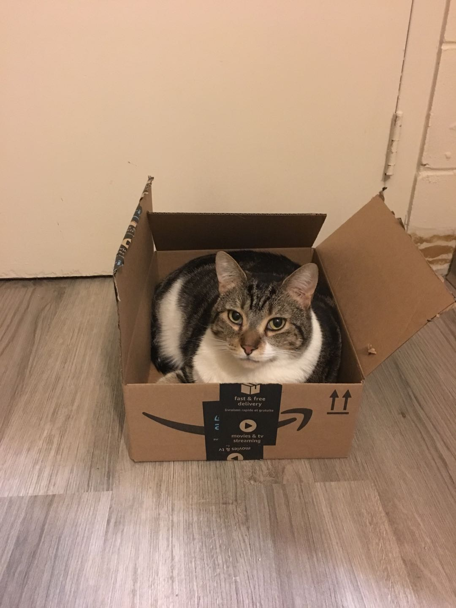